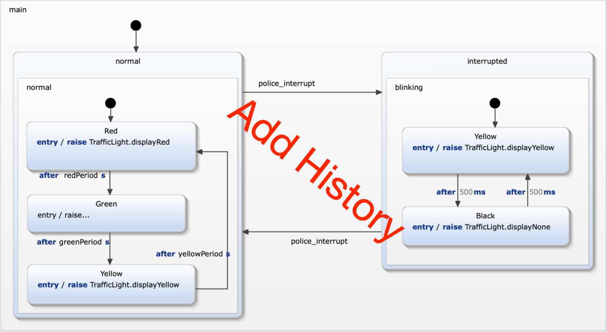

Exercise 6
Traffic Light Restores State
This exercise highlighte the use of histories. When resuming from interrupted mode the last active light color should be restored.
Here again the tests are prepared.

Requirements
Just one requirement is changed:
- R8a: when regular operation is resumed the traffic light restarts with the last active light color red (R), green (G), or yellow (Y) on.
Model the interrupt feature
Follow the same procedure as in exercise 5.
- Take a look at specification/InterruptSpecification.sctunit. These test cases are already complete and checks all the requirements defined above.
It will fail on the first run.
- Extend the stetchart. All required declarations are already in place.
- While you are extending the statechart run the test suite TestTrafficLight.sctunit. It contains the new interrupt specification and
all previously defined tests. Running this suit makes sure that no regressions occur.
- Continue from 2. until all tests are green. You should also have no uncovered model elements.